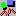

|
Amaya allows you to include vector graphics in Web pages, following the Scalable Vector Graphics (SVG) specification. SVG elements are handled as structured components, in the same way as HTML elements. Therefore, you can manipulate SVG graphics in the same way you manipulate other parts of HTML documents. All editing commands provided by Amaya for handling text are also available for graphics. There are also some additional controls for entering SVG elements.
To create a new SVG element in a document, just move the insertion point
(the caret) to the position where you want to insert it, and then click the
Graphics button .
The Graphics button displays a palette that stays on the screen until you
click the Done button. Just choose the element you want to
create. The available graphics elements are:
line in SVG,
rect in SVG with no rx or
ry attributes,
rect in SVG,
circle in SVG,
ellipse in SVG,
polyline in SVG,
polygon in SVG,
foreignObject in SVG,
text in SVG
When you select a shape in the palette and the selection is in the HTML structure of the document, Amaya creates a new SVG element just at the beginning of the current selection and the selected shape into this new SVG. Amaya generates SVG drawings as blocks, between paragraphs. If you wish to display a drawing inline, today you have let Amaya creates it between paragrahs then edit the source code to move it.
When the current selected element is a SVG element, the new shape is added to the current SVG drawing. The new created shape is added after and then can overlap previous ones.
The creation of a shape needs some direct interactions with the user:
For inserting a mathematical expression into a SVG drawing, you have just to click in the Math palette when the selection in whitin a SVG. Amaya will generate a SVG foreignObject to embed the MathML mark-up.